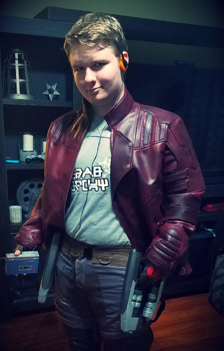
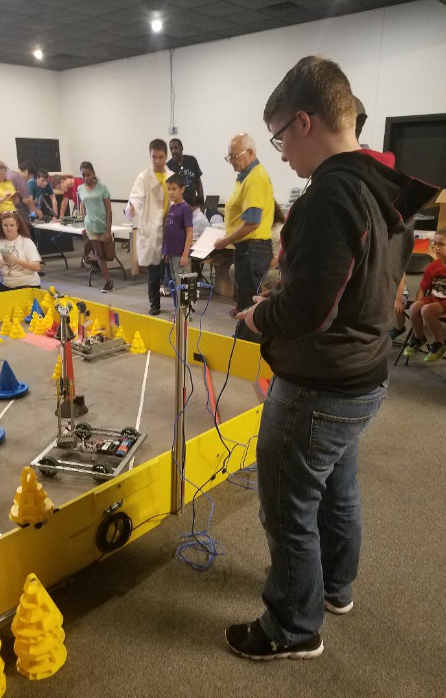
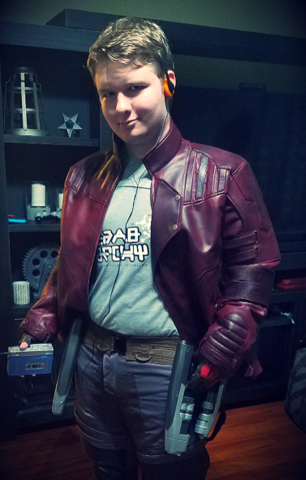
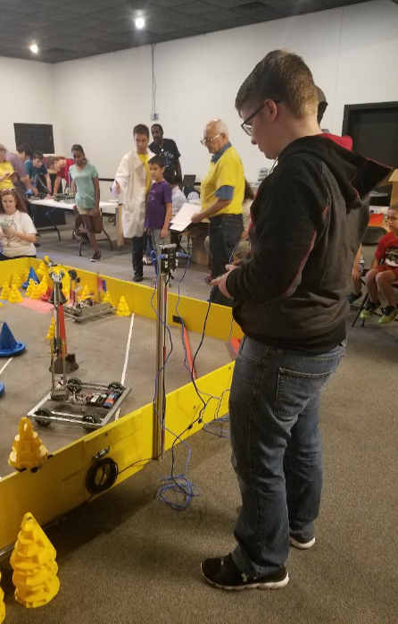

About
I'm Lucky Jaxxon Woods! I enjoy gaming, drawing, reading, building robots and model kits, attending conventions, and almost anything computer related. I am currently enjoying taking courses from Udemy in ultimate creature design and concept art and digital sketching. I am also taking courses from Coursera and the California Institute for the Arts in video game design. Clubs that I participate in are Art Club, Beta, FBLA, and Student Council. I am also active in community service where I volunteer at my local library every summer to help promote literacy with young children. I just really enjoy all things creative, helping others, and constantly learning.